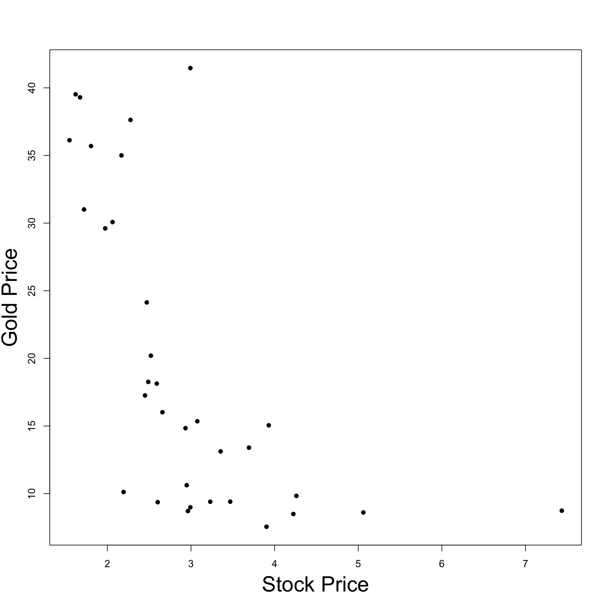
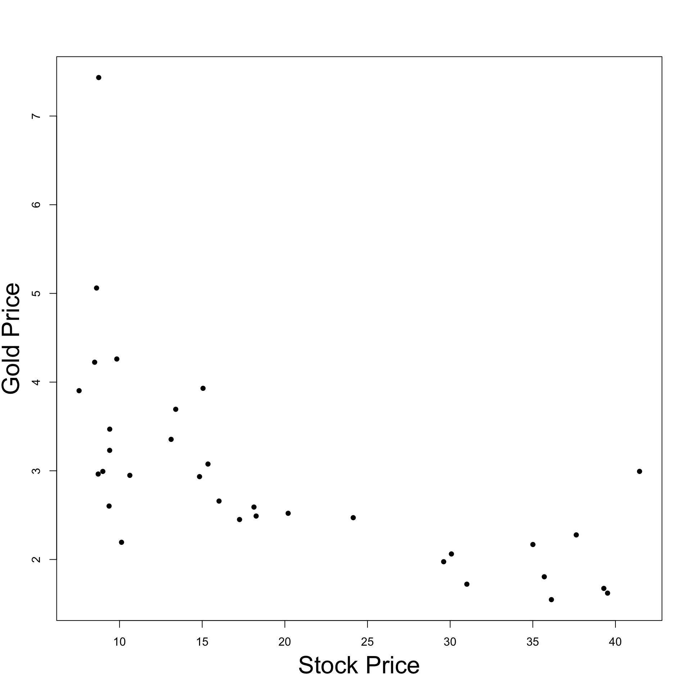

Statistical Models
Lecture 8
Lecture 8:
The Maths of
Regression
Outline of Lecture 8
- Simple linear regression
- General linear regression
- Simple regression as general regression
- Multiple linear regression
- Coefficient of determination R^2
- Example of multiple regression
- Two sample t-test as general regression
Part 1:
Simple linear
regression
Simple linear regression: Motivation
Model: Suppose given two random variables X and Y
- X models observed values
- Y models a response
Goal of Regression: Learn (approximate) the conditional distribution Y | X
- Y | X allows to predict values of Y from values of X
- To determine Y|X, we need the joint distribution of (X,Y)
Problem: The joint distribution of (X,Y) is unknown. We have partial knowledge in the form of paired observations (x_1,y_1) , \ldots, (x_n,y_n) \quad \text{ observed from } \quad (X,Y)
Goal: Use the observations (data) to learn Y|X
Why not just use Least-Squares?
Least-Squares:
Naive solution to regression problem
Find a line of best fit y = \hat \alpha + \hat \beta x
Such line explains the data, i.e., y_i \approx \hat{y}_i \,, \qquad \hat{y}_i = \hat \alpha + \hat \beta x_i
Why not just use Least-Squares?
Drawbacks of least squares:
Only predicts values of y such that (x,y) \, \in \, \text{ Line}
Ignores that (x_i,y_i) come from joint distribution (X,Y)
We don’t have meaningful estimates for the error (residuals) \varepsilon_i = y_i - \hat{y}_i \,, \qquad \hat{y}_i = \hat \alpha + \hat \beta x_i

Linear Regression instead of Least Squares
Linear Regression:
Find a regression line R(x) = \alpha + \beta x
R(x) predicts most likely value of Y when X = x
We will see that regression line coincides with line of best fit R(x) = \hat \alpha + \hat \beta x
Regression gives statistical meaning to Least Squares

Regression function
Definition
Suppose given two random variables X and Y
- X is the predictor
- Y is the response
Definition
The regression function of Y on X is the conditional expectation
R \colon \mathbb{R}\to \mathbb{R}\,, \qquad \quad R(x) := {\rm I\kern-.3em E}[Y | X = x]
Regression function
Interpretation
Idea
The regression function
R(x) = {\rm I\kern-.3em E}[Y | X = x]
predicts the most likely value of Y when we observe
X = x
Notation: We use the shorthand {\rm I\kern-.3em E}[Y|x] := {\rm I\kern-.3em E}[Y | X = x]
The regression problem
Assumption: Suppose given n observations (x_1,y_1) \,, \ldots , (x_n, y_n)
- x_i observed from X
- y_i observed from Y
Problem
From (x_1,y_1) \,, \ldots , (x_n, y_n), learn a regression function
R(x) = {\rm I\kern-.3em E}[Y | x]
which explains the observations, that is, such that
R(x_i) = {\rm I\kern-.3em E}[Y | x_i] \ \approx \ y_i \,, \qquad \forall \, i = 1 , \ldots, n
Remember: We don’t know X and Y
Simple linear regression
Regression problem is difficult without prior knowledge on {\rm I\kern-.3em E}[Y | x]
A popular model is to assume that {\rm I\kern-.3em E}[Y | x] is linear
Definition
The regression function of Y on X is linear if there exist \alpha and \beta s.t.
{\rm I\kern-.3em E}[Y | x] = \alpha + \beta x \,, \qquad \forall \, x \in \mathbb{R}
\alpha and \beta are called regression coefficients
The above regression is called simple because only 2 variables are involved
What do we mean by linear?
We said that the regression is linear if {\rm I\kern-.3em E}[Y | x ] = \alpha + \beta x Linearity in intended wrt the parameters \alpha and \beta
Examples:
Linear regression of Y on X^2 is {\rm I\kern-.3em E}[Y | x^2 ] = \alpha + \beta x^2
Linear regression of \log Y on 1/X is {\rm I\kern-.3em E}[ \log Y | x ] = \alpha + \beta \frac{1}{ x }
Simple linear regression
Model Assumptions
Suppose given n observations (x_1,y_1) \,, \ldots , (x_n, y_n)
- x_i observed from X
- y_i observed from Y
Definition
For each i = 1 , \ldots, n, we denote by Y_i a random variable with distribution
Y | X = x_i
Model Assumptions: Recall, Y_i is distributed like Y | X = x_i
Predictor is known: The values x_1, \ldots, x_n are known
Normality: The conditional distribution Y_i is normal
Linear mean: There are parameters \alpha and \beta such that {\rm I\kern-.3em E}[Y_i] = \alpha + \beta x_i \,, \qquad \forall \, i = 1, \ldots, n
Common variance (Homoscedasticity): There is a parameter \sigma^2 such that {\rm Var}[Y_i] = \sigma^2 \,, \qquad \forall \, i = 1, \ldots, n
Independence: The random variables Y_1 \,, \ldots \,, Y_n are independent
Characterization of the Model
- Assumptions 1–5 look quite abstract
- The following Proposition gives a handy characterization
Proposition
Assumptions 1-5 are satisfied if and only if
Y_i = \alpha + \beta x_i + \varepsilon_i
for some random variables
\varepsilon_1 , \ldots, \varepsilon_n \,\, \text{ iid } \,\, N(0,\sigma^2)
- The terms \varepsilon_i are called errors or residuals
Proof
By Assumption 2, we have that Y_i is normal
By Assumptions 3-4, we have {\rm I\kern-.3em E}[Y_i] = \alpha + \beta x_i \,, \qquad \quad {\rm Var}[Y_i] = \sigma^2
Therefore \, Y_i \sim N(\alpha + \beta x_i, \sigma^2)
Define the random variables \varepsilon_i by \varepsilon_i := Y_i - (\alpha + \beta x_i) \quad \qquad \left( \text{which implies } \,\, Y_i = \alpha + \beta x_i + \varepsilon_i \right)
By Assumption 5, we have that Y_1,\ldots,Y_n are independent
Therefore \varepsilon_1,\ldots, \varepsilon_n are independent
Since Y_i \sim N(\alpha + \beta x_i, \sigma^2), we conclude that \varepsilon_i are iid N(0,\sigma^2)
Therefore, Y_i = \alpha + \beta x_i + \varepsilon_i with \varepsilon_i iid N(0,\sigma^2) \qquad \qquad \qquad \qquad \quad \qquad \square
Likelihood function
Let X_1, \ldots, X_n be continuous rv with joint pdf f = f(x_1, \ldots, x_n | \theta) \,, \qquad \theta \in \Theta \,\, \, \text{ parameter}
Definition
The likelihood function of (X_1, \ldots, X_n) for a given sample (x_1, \ldots, x_n) is
L \colon \Theta \to \mathbb{R}\,, \qquad \quad L(\theta | x_1,\ldots, x_n ) := f(x_1, \ldots, x_n | \theta)
Theorem
Suppose Assumptions 1–5 hold. The likelihood function of (Y_1,\ldots,Y_n) is
L(\alpha,\beta, \sigma^2 | y_1, \ldots, y_n ) = \frac{1}{(2\pi \sigma^2)^{n/2}} \, \exp \Bigg( -\frac{\sum_{i=1}^n(y_i-\alpha - \beta x_i)^2}{2\sigma^2} \Bigg)
Proof
By the Assumptions, we have Y_i \sim N( \alpha + \beta x_i , \sigma^2 )
Therefore, the pdf of Y_i is f_{Y_i} (y_i) = \frac{1}{\sqrt{2\pi \sigma^2}} \exp \Bigg( -\frac{(y_i-\alpha-\beta{x_i})^2}{2\sigma^2} \Bigg)
Since Y_1,\ldots, Y_n are independent, we obtain \begin{align*} L(\alpha,\beta, \sigma^2 | y_1, \ldots,y_n) & = f(y_1,\ldots,y_n) = \prod_{i=1}^n f_{Y_i}(y_i) \\ & = \prod_{i=1}^n \frac{1}{\sqrt{2\pi \sigma^2}} \exp \Bigg( -\frac{(y_i-\alpha-\beta{x_i})^2}{2\sigma^2} \Bigg) \\ & = \frac{1}{(2\pi \sigma^2)^{n/2}} \, \exp \Bigg( -\frac{\sum_{i=1}^n(y_i- \alpha - \beta x_i)^2}{2\sigma^2} \Bigg) \qquad \qquad \square \end{align*}
Model Summary
Simple linear regression of Y on X is the function {\rm I\kern-.3em E}[Y | x] = \alpha + \beta x
Suppose given n observations (x_1,y_1) \,, \ldots , (x_n, y_n)
- x_i observed from X
- y_i observed from Y
Denote by Y_i the random variable Y | X = x_i
We suppose that Y_i has the form Y_i = \alpha + \beta x_i + \varepsilon_i \,, \qquad \varepsilon_i \, \text{ iid } \, N(0,\sigma^2)
In particular {\rm I\kern-.3em E}[Y|x_i] = {\rm I\kern-.3em E}[Y_i] = \alpha + \beta x_i
The linear regression problem
Problem
Given observations (x_1,y_1) \,, \ldots , (x_n, y_n), learn a linear regression function
{\rm I\kern-.3em E}[Y | x] = \alpha + \beta x
which explains the observations, that is, such that \begin{equation} \tag{1}
{\rm I\kern-.3em E}[Y_i] = {\rm I\kern-.3em E}[Y | x_i] \ \approx \ y_i \,, \qquad \forall \, i = 1 , \ldots, n
\end{equation}
Question
How do we enforce (1)?
Answer: Recall condition (1) from previous slide \begin{equation} \tag{1} {\rm I\kern-.3em E}[Y_i] \ \approx \ y_i \,, \qquad \forall \, i = 1 , \ldots, n \end{equation}
If we want (1) to hold, we need to maximize the joint probability \begin{equation}\tag{P} P(Y_1 \approx y_1, \ldots, Y_n \approx y_n) = \int_{A} f(y) \, dy \approx |A| f(y) \end{equation}
- where f is the joint pdf of (Y_1,\ldots, Y_n)
- A is (small) open set in \mathbb{R}^n containing the observations (y_1,\ldots,y_n)
- |A| is the n-dimensional volume of A
To maximize the probability, by (P), it is enough to maximize f(y_1,\ldots,y_n)
Therefore, choose parameters \hat \alpha, \hat \beta, \hat \sigma which maximize the likelihood function \max_{\alpha,\beta,\sigma} f(y_1,\ldots,y_n | \alpha,\beta, \sigma^2) = \max_{\alpha,\beta,\sigma} \ L(\alpha,\beta, \sigma^2 | y_1, \ldots, y_n ) Maximum Likelihood Estimation: Find parameters that maximize the Likelihood, and so (P)
Maximum Likelihood Estimation
Theorem
Suppose Assumptions 1–5 hold. Assume given n observations (x_1,y_1), \ldots, (x_n,y_n). The maximization problem
\max_{\alpha,\beta,\sigma} \ L(\alpha,\beta, \sigma^2 | y_1, \ldots, y_n )
admits the unique solution
\hat \alpha = \overline{y} - \hat \beta \, \overline{x} \,, \qquad
\hat \beta = \frac{S_{xy}}{S_{xx}} \,, \qquad
\hat{\sigma}^2 = \frac{1}{n} \sum_{i=1}^n \left( y_i - \hat \alpha - \hat \beta x_i \right)^2
The constants \hat \alpha, \hat \beta, \hat{\sigma}^2 are called Maximum Likelihood Estimators (MLE)
Important: \hat \alpha and \hat \beta are the Least Squares coefficients!
Proof of Theorem
The \log function is strictly increasing. Therefore \max_{\alpha,\beta,\sigma} \ L(\alpha,\beta, \sigma^2 | y_1, \ldots, y_n ) \quad \text{ is equivalent to } \quad \max_{\alpha,\beta,\sigma} \ \log L( \alpha,\beta, \sigma^2 | y_1, \ldots, y_n )
Recall that the likelihood is L(\alpha,\beta, \sigma^2 | y_1, \ldots, y_n ) = \frac{1}{(2\pi \sigma^2)^{n/2}} \, \exp \left( - \frac{\sum_{i=1}^n(y_i-\alpha - \beta x_i)^2}{2\sigma^2} \right)
Hence the log–likelihood is \log L(\alpha,\beta, \sigma^2 | y_1, \ldots, y_n ) = - \frac{n}{2} \log (2 \pi) - \frac{n}{2} \log \sigma^2 - \frac{ \sum_{i=1}^n(y_i-\alpha - \beta x_i)^2 }{2 \sigma^2}
Suppose first that \sigma is fixed. In this case the problem \max_{\alpha,\beta} \ \left\{ \frac{n}{2} \log (2 \pi) - \frac{n}{2} \log \sigma^2 - \frac{ \sum_{i=1}^n(y_i-\alpha - \beta x_i)^2 }{2 \sigma^2} \right\} is equivalent to \min_{\alpha, \beta} \ \sum_{i=1}^n(y_i-\alpha - \beta x_i)^2
This is the Least Squares problem! Hence the solution is \hat \alpha = \overline{y} - \hat \beta \, \overline{x} \,, \qquad \hat \beta = \frac{S_{xy}}{S_{xx}}
Substituting \hat \alpha and \hat \beta we obtain \begin{align*} \max_{\alpha,\beta,\sigma} \ & \log L(\alpha,\beta, \sigma^2 | y_1, \ldots, y_n ) = \max_{\sigma} \ \log L(\hat \alpha, \hat \beta, \sigma^2 | y_1, \ldots, y_n ) \\[10pt] & = \max_{\sigma} \ \left\{ - \frac{n}{2} \log (2 \pi) - \frac{n}{2} \log \sigma^2 - \frac{ \sum_{i=1}^n(y_i-\hat\alpha - \hat\beta x_i)^2 }{2 \sigma^2} \right\} \end{align*}
The above is a one-dimensional minimization problem in \sigma
Taking the first order derivative wrt \sigma, it can be shown the unique solution is \hat{\sigma}^2 = \frac{1}{n} \sum_{i=1}^n \left( y_i - \hat \alpha - \hat \beta x_i \right)^2
This concludes the proof
Least-squares vs Linear regression
Linear regression and least-squares give seemingly the same answer
| Least-squares line | y = \hat \alpha + \hat \beta x |
|---|---|
| Linear regression line | {\rm I\kern-.3em E}[Y | x ] = \hat \alpha + \hat \beta x |
Question: Why did we define regression if it gives same answer as least-squares?
Answer: There is actually a big difference
- Least-squares line y = \hat \alpha + \hat \beta x is just a geometric object
- We don’t have meaningful estimates for the error (residuals) \varepsilon_i = y_i - \hat{y_i} \,, \qquad \hat{y}_i = \hat \alpha + \hat \beta_n
- Regression line {\rm I\kern-.3em E}[Y | x ] = \hat \alpha + \hat \beta x is Statistical model for Y|X
- Can quantify in probability how well the linear model fits the data
Part 2:
General linear
regression
Simple vs General regression
Simple regression: Response variable Y depends on one predictor X
The goal is to learn the distribution of
Y | X
Y | X allows to predict values of Y, knowing values of X
General regression: Response variable Y depends on p predictors Z_1 , \ldots, Z_p
The goal is to learn the distribution of Y | Z_1, \ldots, Z_p
Y | Z_1 , \dots, Z_p allows to predict values of Y, knowing values of Z_1 , \dots, Z_p
General regression function
Suppose given random variables Z_1 , \ldots, Z_p and Y
- Z_1,\ldots, Z_p are the predictors
- Y is the response
Notation: We denote points of \mathbb{R}^p by z = (z_1, \ldots, z_p)
Definition
The regression function of Y on Z_1,\ldots,Z_p is the conditional expectation
R \colon \mathbb{R}^p \to \mathbb{R}\,, \qquad \quad R(z) := {\rm I\kern-.3em E}[Y | Z_1 = z_1, \ldots , Z_p = z_p]
General regression function
Idea
The regression function
R(z) = {\rm I\kern-.3em E}[Y | Z_1 = z_1, \ldots , Z_p = z_p]
predicts the most likely value of Y when we observe
Z_1 = z_1, \,\,\ldots , \,\, Z_p = z_p
Notation: We use the shorthand {\rm I\kern-.3em E}[Y | z_1, \ldots, z_p] := {\rm I\kern-.3em E}[Y | Z_1 = z_1, \ldots , Z_p = z_p]
The general regression problem
Assumption: For each i =1 , \ldots, n we assume given observations
- data point (z_{i1}, \ldots, z_{ip}, y_i)
- z_{ij} is from Z_j
- y_i is from Y
Problem
From the above data, learn a regression function
R(z) = {\rm I\kern-.3em E}[Y | z_1, \ldots, z_p]
which explains the observations, that is, such that
{\rm I\kern-.3em E}[Y | z_{i1}, \ldots, z_{ip}] \ \approx \ y_i \,, \qquad \forall \, i = 1 , \ldots, n
General linear regression
Key assumption: The regression function R(z) = {\rm I\kern-.3em E}[Y | z_1, \ldots, z_p] is linear
Definition
The regression of Y on Z_1 , \ldots, Z_p is linear if there exist \beta_1, \ldots, \beta_p s.t.
{\rm I\kern-.3em E}[Y | z_1, \ldots, z_p] = \beta_1 z_1 + \ldots + \beta_p z_p \,, \quad \forall \, z \in \mathbb{R}^p
\beta_1, \ldots, \beta_p are called regression coefficients
Note:
In simple regression we have 2 coefficients \alpha and \beta
In multiple regression we have p coefficients \beta_1, \ldots, \beta_p
General linear regression
Model Assumptions
For each i =1 , \ldots, n we assume given
- data point (z_{i1}, \ldots, z_{ip}, y_i)
- z_{ij} is from Z_j
- y_i is from Y
Definition
For each i = 1, \ldots, n, we denote by Y_i a random variable with distribution
Y | Z_1 = z_{i1} , \ldots, Z_p = z_{ip}
Model Assumptions: Recall, Y_i is distributed like Y | Z_1 = z_{i1} , \ldots, Z_p = z_{ip}
Predictor is known: The values z_{i1}, \ldots, z_{ip} are known
Normality: The conditional distribution Y_i is normal
Linear mean: There are parameters \beta_1,\ldots,\beta_p such that {\rm I\kern-.3em E}[Y_i] = \beta_1 z_{i1} + \ldots + \beta_p z_{ip} \,, \qquad \forall \, i = 1, \ldots, n
Common variance (Homoscedasticity): There is a parameter \sigma^2 such that {\rm Var}[Y_i] = \sigma^2 \,, \qquad \forall \, i = 1, \ldots, n
Independence: The random variables Y_1 \,, \ldots \,, Y_n are independent
Characterization of the Model
- Assumptions 1–5 look quite abstract
- The following Proposition gives a handy characterization
Proposition
Assumptions 1-5 are satisfied if and only if
Y_i = \beta_1 z_{i1} + \ldots + \beta_p z_{ip} + \varepsilon_{i}
for some errors or residuals
\varepsilon_1 , \ldots, \varepsilon_n \,\, \text{ iid } \,\, N(0,\sigma^2)
Proof: Similar to the proof of Proposition in Slide 14. Omitted
Likelihood function
Introduce the column vectors \beta := (\beta_1, \ldots, \beta_p)^T \,, \qquad y := (y_1,\ldots,y_n)^T
Theorem
Suppose Assumptions 1–5 hold. The likelihood function of (Y_1,\ldots,Y_n) is
L(\beta, \sigma^2 | y ) = \frac{1}{(2\pi \sigma^2)^{n/2}} \, \exp \left( -\frac{\sum_{i=1}^n(y_i- \beta_1 z_{i1} - \ldots - \beta_p z_{ip})^2}{2\sigma^2} \right)
Proof
By the Assumptions, we have Y_i \sim N(\beta_1 z_{i1} + \ldots + \beta_p z_{ip} , \sigma^2 )
Therefore, the pdf of Y_i is f_{Y_i} (y_i) = \frac{1}{\sqrt{2\pi \sigma^2}} \exp \left( -\frac{(y_i - \beta_1 z_{i1} - \ldots - \beta_p z_{ip})^2}{2\sigma^2} \right)
Since Y_1,\ldots, Y_n are independent, we obtain \begin{align*} L(\beta, \sigma^2 | y) & = f(y_1,\ldots,y_n) = \prod_{i=1}^n f_{Y_i}(y_i) \\ & = \prod_{i=1}^n \frac{1}{\sqrt{2\pi \sigma^2}} \exp \left( -\frac{(y_i - \beta_1 z_{i1} - \ldots - \beta_p z_{ip})^2}{2\sigma^2} \right) \\ & = \frac{1}{(2\pi \sigma^2)^{n/2}} \, \exp \left( -\frac{\sum_{i=1}^n(y_i- \beta_1 z_{i1} - \ldots - \beta_p z_{ip})^2}{2\sigma^2} \right) \qquad \quad \square \end{align*}
Design matrix
For each i = 1 , \ldots, n suppose given p observations z_{i1}, \ldots, z_{ip}
Definition
The design matrix is the n \times p matrix
Z :=
\left(
\begin{array}{ccc}
z_{11} & \ldots & z_{1p} \\
z_{21} & \ldots & z_{2p} \\
\ldots & \ldots & \ldots \\
z_{n1} & \ldots & z_{np} \\
\end{array}
\right)
Vectorial notation
\begin{align*} y - Z\beta & = \left( \begin{array}{c} y_1 \\ y_2 \\ \ldots \\ y_n \\ \end{array} \right) - \left( \begin{array}{ccc} z_{11} & \ldots & z_{1p} \\ z_{21} & \ldots & z_{2p} \\ \ldots & \ldots & \ldots \\ z_{n1} & \ldots & z_{np} \\ \end{array} \right) \left( \begin{array}{c} \beta_1 \\ \ldots \\ \beta_p \\ \end{array} \right) \\[20pt] & = \left( \begin{array}{c} y_1 \\ y_2 \\ \ldots \\ y_n \\ \end{array} \right) - \left( \begin{array}{c} \beta_1 z_{11} + \ldots + \beta_p z_{1p}\\ \beta_1 z_{21} + \ldots + \beta_p z_{2p} \\ \ldots \\ \beta_1 z_{n1} + \ldots + \beta_p z_{np} \\ \end{array} \right) \\[20pt] & = \left( \begin{array}{c} y_1 - \beta_1 z_{11} - \ldots - \beta_p z_{1p}\\ y_2 - \beta_1 z_{21} - \ldots - \beta_p z_{2p} \\ \ldots \\ y_n - \beta_1 z_{n1} - \ldots - \beta_p z_{np} \\ \end{array} \right) \, \in \, \mathbb{R}^n \end{align*}
RSS: Residual Sum of Squares
From the previous calculation, we get
(y - Z \beta)^T \, (y - Z\beta) = \sum_{i=1}^n \left( y_i - \beta_1 z_{i1} - \ldots - \beta_p z_{ip} \right)^2
Definition
Assume given
- n \times p design matrix Z
- vector y \in \mathbb{R}^n
The residual sum of squares associated to the parameter \beta is the function \mathop{\mathrm{RSS}}\colon \mathbb{R}^p \to \mathbb{R}\,, \qquad \mathop{\mathrm{RSS}}(\beta) := (y - Z \beta)^T \, (y - Z\beta)
Likelihood function
Vectorial notation
Using vectorial notation, the likelihood function can be re-written as
\begin{align*} L(\beta, \sigma^2 | y ) & = \frac{1}{(2\pi \sigma^2)^{n/2}} \, \exp \left( -\frac{\sum_{i=1}^n(y_i - \beta_1 z_{i1} - \ldots - \beta_p z_{ip})^2}{2\sigma^2} \right) \\[20pt] & = \frac{1}{(2\pi \sigma^2)^{n/2}} \, \exp \left( - \frac{ (y - Z \beta)^T \, (y - Z\beta) }{2 \sigma^2} \right) \\[20pt] & = \frac{1}{(2\pi \sigma^2)^{n/2}} \, \exp \left( - \frac{\mathop{\mathrm{RSS}}(\beta) }{2 \sigma^2} \right) \end{align*}
Model Summary
General linear regression of Y on Z_1, \ldots, Z_p is the function {\rm I\kern-.3em E}[Y | z_1,\ldots,z_p] = \beta_1 z_{1} + \ldots + \beta_p z_p
For each i=1, \ldots, n suppose given the observations
- (z_{i1}, \ldots, z_{ip}, y_i) observed from (Z_1,\ldots, Z_p,Y)
Denote by Y_i the random variable Y | z_{i1} ,\ldots, z_{ip}
We suppose that Y_i has the form Y_i = \beta_1 z_{i1} + \ldots + \beta_p z_{ip} + \varepsilon_i \,, \qquad \varepsilon_i \,\, \text{ iid } \,\, N(0,\sigma^2)
In particular, {\rm I\kern-.3em E}[Y | z_{i1}, \ldots, z_{ip}] = {\rm I\kern-.3em E}[Y_i] = \beta_1 z_{i1} + \ldots + \beta_p z_{ip}
The general linear regression problem
For each i = 1 , \ldots, n suppose given data points (z_{i1}, \ldots, z_{ip}, y_i)
Problem
From the above data, learn a general linear regression function
{\rm I\kern-.3em E}[Y | z_1, \ldots, z_p] = \beta_1 z_1 +
\ldots + \beta_p z_p
which explains the observations, that is, such that \begin{equation} \tag{2}
{\rm I\kern-.3em E}[Y_i] = {\rm I\kern-.3em E}[Y | z_{i1}, \ldots, z_{ip}] \ \approx \ y_i \,, \qquad \forall \, i = 1 , \ldots, n
\end{equation}
Question
How do we enforce (2)?
Answer: Recall condition (2) from the previous slide \begin{equation} \tag{2} {\rm I\kern-.3em E}[Y_i] \ \approx \ y_i \,, \qquad \forall \, i = 1 , \ldots, n \end{equation}
If we want (2) to hold, we need to maximize the joint probability \begin{equation}\tag{P} P(Y_1 \approx y_1, \ldots, Y_n \approx y_n) = \int_{A} f(y) \, dy \approx |A| f(y) \end{equation}
- where f is the joint pdf of (Y_1,\ldots,Y_n)
- A is a (small) open set in \mathbb{R}^n containing the observations (y_1,\ldots,y_n)
- |A| is the n-dimensional volume of A
To maximize the probability, by (P), it is enough to maximize f(y_1,\ldots,y_n)
Therefore, choose parameters \hat \beta, \hat \sigma which maximize the likelihood function \max_{\beta,\sigma} \ f(y | \beta, \sigma^2) = \max_{\beta,\sigma} \ L(\beta, \sigma^2 | y )
Maximum Likelihood Estimation
Theorem
Suppose Assumptions 1–5 hold. Assume given observations
(z_{i1}, \ldots, z_{ip} ,y_i) \,, \quad \forall \, i =1 ,\ldots n \,, \qquad \text{ s.t. } \,\,
\det (Z Z^T) \neq 0
The maximization problem
\max_{\beta,\sigma} \ L(\beta, \sigma^2 | y )
admits the unique solution
\hat \beta = (Z^T Z)^{-1} Z^T y \,, \qquad
\hat{\sigma}^2 = \frac{1}{n} \mathop{\mathrm{RSS}}(\hat \beta)
- The constants \hat \beta, \hat{\sigma}^2 are called Maximum Likelihood Estimators (MLE)
Minimizing the RSS
The proof of previous Theorem relies on the following Lemma
Lemma
Assume given observations
(z_{i1}, \ldots, z_{ip} ,y_i) \,, \quad \forall \, i =1 ,\ldots n \,, \qquad \text{ s.t. } \,\,
\det (Z Z^T) \neq 0
The minimization problem
\min_{\beta} \ \mathop{\mathrm{RSS}}(\beta)
admits the unique solution
\hat \beta = (Z^T Z)^{-1} Z^T y
Results from matrix calculus
To prove the Lemma we need some auxiliary results
In the following, x denotes an n \times 1 column vector
x = \left( \begin{array}{c} x_1 \\ x_2 \\ \vdots \\ x_n \end{array} \right)
Results from matrix calculus
First result
Suppose given an n \times 1 column vector a
Define the scalar function
f \colon \mathbb{R}^n \to \mathbb{R}\,, \qquad f(x) := a^T x
- Then f is differentiable and the gradient is constant
\nabla f (x) = a^T
Results from matrix calculus
Second result
Suppose given an m \times n matrix A
Define the vectorial affine function
g \colon \mathbb{R}^n \to \mathbb{R}^m \,, \qquad g(x) := A x
- Then g is differentiable and the Jacobian is constant
J g (x) = A
Results from matrix calculus
Third result
Suppose given an n \times n matrix M
Define the quadratic form
h \colon \mathbb{R}^n \to \mathbb{R}\,, \qquad h(x) := x^T M x
- Then h is differentiable and the Jacobian is
J h(x) = x^T (M + M^T)
Additional results on the matrix transpose
For any m \times n matrix A (A^T)^T= A
A square matrix M of size n \times n is symmetric iff M^T = M
Scalars can be seen as 1 \times 1 symmetric matrices. Therefore c^T = c \,, \qquad \forall \, c \in \mathbb{R}
For any m \times n matrix A and n \times p matrix B (AB)^T=B^T A^T
The matrix A^T A is symmetric by point (2) (A^T A)^T = A^T (A^T)^T = A^T A
Optimality conditions
We also need the n-dimensional version of the Lemma in Slide 103 Lecture 7
Lemma
Suppose f \colon \mathbb{R}^n \to \mathbb{R} has positive semi-definite Hessian. They are equivalent
- The point \hat x is a minimizer of f, that is, such that
f( \hat x ) = \min_{x \in \mathbb{R}^n} f(x)
- The point \hat x satisfies the optimality conditions
\nabla f (\hat x) = 0
Proof: Minimizing the RSS
Recall the definition of Residual Sum of Squares \mathop{\mathrm{RSS}}\colon \mathbb{R}^{p} \to \mathbb{R}\,, \qquad \mathop{\mathrm{RSS}}(\beta) = (y - Z \beta)^T (y - Z \beta)
We are finally ready to minimize the \mathop{\mathrm{RSS}} \min_{\beta \in \mathbb{R}^p} \ \mathop{\mathrm{RSS}}(\beta)
It is not too difficult to show that \nabla^2 \mathop{\mathrm{RSS}} is positive-semidefinite (omitted)
By the Lemma on Optimality Conditions in Slide 50 \beta \,\, \text{ minimizes } \,\, \mathop{\mathrm{RSS}}\qquad \iff \qquad \nabla \mathop{\mathrm{RSS}}(\beta) = 0
To compute \nabla \mathop{\mathrm{RSS}}, we first expand \mathop{\mathrm{RSS}} \begin{align*} \mathop{\mathrm{RSS}}(\beta) & = (y-Z \beta)^T (y-Z \beta) \\[5pt] & = (y^T - (Z\beta)^T ) (y-Z \beta) \\[5pt] & = (y^T - \beta^T Z^T ) (y-Z \beta) \\[5pt] & = y^T y - y^T Z \beta - \beta^T Z^T y + \beta^T Z^T Z \beta \end{align*}
Note that
- \beta has size p \times 1 \quad \implies \quad \beta^T has size 1 \times p
- Z has size n \times p \quad \implies \quad Z^T has size p \times n
- y has size n \times 1 \quad \implies \quad \beta^T Z^T y has size \left( 1 \times p \right) \times \left( p \times n \right) \times \left( n \times 1 \right) = 1 \times 1
\beta^T Z^T y \, is a scalar \quad \implies \quad it is symmetric and we get \left( \beta^T Z^T y \right)^T = \beta^T Z^T y
Using the properties of transposition we also get \left( \beta^T Z^T y \right)^T = y^T Z \beta
From the last 2 equations we conclude \beta^T Z^T y = y^T Z \beta
The \mathop{\mathrm{RSS}} can now be written as \begin{align*} \mathop{\mathrm{RSS}}(\beta) & = y^T y - y^T Z \beta - \textcolor{magenta}{\beta^T Z^T y} + \beta^T Z^T Z \beta \\[5pt] & = y^T y - y^T Z \beta - \textcolor{magenta}{y^T Z \beta} + \beta^T Z^T Z \beta \\[5pt] & = y^T y - 2 y^T Z \beta + \beta^T Z^T Z \beta \end{align*}
Therefore, we have \begin{align*} \nabla \mathop{\mathrm{RSS}}(\beta) & = \nabla ( y^T y ) - 2 \nabla (y^T Z \beta ) + \nabla (\beta^T Z^T Z \beta ) \\[5pt] & = - 2 \nabla (y^T Z \beta ) + \nabla (\beta^T Z^T Z \beta ) \end{align*}
We need to compute \nabla (y^T Z \beta ) \qquad \quad \text{ and } \qquad \quad \nabla (\beta^T Z^T Z \beta )
Note that y^T Z has dimension \, ( 1 \times n ) \times ( n \times p ) = 1 \times p
Since \beta has dimension p \times 1, we can define the function f \colon \mathbb{R}^p \to \mathbb{R}\,, \qquad f(\beta) := y^T Z \beta
By the First Result on Matrix Calculus in Slide 46 \nabla f = \nabla ( \textcolor{magenta}{y^T Z} \beta) = \textcolor{magenta}{y^T Z}
Note that Z^T Z has dimension \, ( p \times n ) \times ( n \times p ) = p \times p
Since \beta has dimension p \times 1, we can define the function
h \colon \mathbb{R}^p \to \mathbb{R}\,, \qquad h(\beta) := \beta^T Z^T Z \beta
By the Third Result on Matrix Calculus in Slide 48 \begin{align*} \nabla h & = \nabla (\beta^T \textcolor{magenta}{Z^T Z} \beta) = \beta^T (\textcolor{magenta}{Z^T Z} + (\textcolor{magenta}{Z^T Z})^T ) \\[5pt] & = \beta^T ( Z^T Z + Z^T Z ) = 2 \beta^T (Z^T Z) \end{align*}
Putting together these results we obtain
\begin{align*} \nabla \mathop{\mathrm{RSS}}(\beta) & = - 2 \nabla (y^T Z \beta ) + \nabla (\beta^T Z^T Z \beta ) \\[5pt] & = -2 y^T Z + 2 \beta^T (Z^T Z) \end{align*}
We can finally solve the optimality conditions: \begin{align*} \nabla \mathop{\mathrm{RSS}}(\beta) = 0 \qquad & \iff \qquad -2 y^T Z + 2 \beta^T (Z^T Z) = 0 \\[5pt] & \iff \qquad \beta^T (Z^T Z) = y^T Z \end{align*}
Transposing both sides of the last equation yields \begin{equation} \tag{3} (Z^T Z) \beta = Z^T y \end{equation}
The matrix Z^T Z is invertible, since we are assuming \det (Z^T Z) \neq 0
Multiplying by (Z^T Z)^{-1} both sides of (3), we get \beta = (Z^T Z)^{-1} Z^T y
- In conclusion, we have shown that
\nabla \mathop{\mathrm{RSS}}(\beta) = 0 \qquad \iff \qquad \beta = (Z^T Z)^{-1} Z^T y
- By the Lemma on Optimality Conditions in Slide 50, we infer
\beta = (Z^T Z)^{-1} Z^T y \,\,\, \text{ minimizes } \,\,\, \mathop{\mathrm{RSS}}
- This concludes the proof
Maximum Likelihood Estimation
We are finally in position to prove the main Theorem. We recall the statement
Theorem
Suppose Assumptions 1–5 hold. Assume given observations
(z_{i1}, \ldots, z_{ip} ,y_i) \,, \quad \forall \, i =1 ,\ldots n \,, \qquad \text{ s.t. } \,\,
\det (Z Z^T) \neq 0
The maximization problem
\max_{\beta,\sigma} \ L(\beta, \sigma^2 | y )
admits the unique solution
\hat \beta = (Z^T Z)^{-1} Z^T y \,, \qquad
\hat{\sigma}^2 = \frac{1}{n} \mathop{\mathrm{RSS}}(\hat \beta)
Proof of Theorem
The \log function is strictly increasing. Therefore \max_{\beta,\sigma} \ L(\beta, \sigma^2 | y ) \quad \text{ is equivalent to } \quad \max_{\beta,\sigma} \ \log L( \beta, \sigma^2 | y )
Recall that the likelihood is L(\beta, \sigma^2 | y ) = \frac{1}{(2\pi \sigma^2)^{n/2}} \, \exp \left( - \frac{ \mathop{\mathrm{RSS}}(\beta) }{2\sigma^2} \right)
Hence, the log–likelihood is \log L(\beta, \sigma^2 | y ) = - \frac{n}{2} \log (2 \pi) - \frac{n}{2} \log \sigma^2 - \frac{ \mathop{\mathrm{RSS}}(\beta) }{2 \sigma^2}
Suppose first that \sigma is fixed. In this case the problem \max_{\beta} \ \left\{ \frac{n}{2} \log (2 \pi) - \frac{n}{2} \log \sigma^2 - \frac{ \mathop{\mathrm{RSS}}(\beta) }{2 \sigma^2} \right\} is equivalent to \min_{\beta} \ \mathop{\mathrm{RSS}}(\beta)
We have already proven that the \mathop{\mathrm{RSS}} is minimized at \hat \beta = (Z^T Z)^{-1} Z^T y
- Substituting \hat \beta, we obtain
\begin{align*} \max_{\beta,\sigma} \ & \log L(\beta, \sigma^2 | y ) = \max_{\sigma} \ \log L(\hat \beta, \sigma^2 | y ) \\[5pt] & = \max_{\sigma} \ \left\{ - \frac{n}{2} \log (2 \pi) - \frac{n}{2} \log \sigma^2 - \frac{ \mathop{\mathrm{RSS}}(\hat \beta) }{2 \sigma^2} \right\} \end{align*}
The above is a one-dimensional minimization problem in \sigma
Taking the first order derivative wrt \sigma, it can be shown the unique solution is \hat{\sigma}^2 = \frac{1}{n} \mathop{\mathrm{RSS}}(\hat \beta)
This concludes the proof
Part 3:
Simple regression as
general regression
General linear regression model
- The general linear regression model is
Y_i = \beta_1 z_{i1} + \ldots + \beta_p z_{ip} + \varepsilon_i \,, \quad \varepsilon_i \sim N(0,\sigma^2) \quad \, \forall \, i = 1 , \ldots, n
The design matrix, and data and parameters vectors are Z = \left( \begin{array}{ccc} z_{11} & \ldots & z_{1p} \\ \ldots & \ldots & \ldots \\ z_{n1} & \ldots & z_{np} \\ \end{array} \right) \in \mathbb{R}^{n \times p} \,, \qquad y = \left( \begin{array}{c} y_1 \\ \ldots \\ y_{n} \\ \end{array} \right)\,, \qquad \beta = \left( \begin{array}{c} \beta_1 \\ \ldots \\ \beta_{p} \\ \end{array} \right)
The likelihood function for general linear regression is maximized by \hat \beta = (Z^T Z)^{-1} Z^T y
Simple linear regression model
- The simple linear regression model is
Y_i = \alpha + \beta x_i + \varepsilon_i \,, \,, \quad \varepsilon_i \sim N(0,\sigma^2) \quad \, \forall \, i = 1 , \ldots, n
The data is given by x = \left( \begin{array}{c} x_1 \\ \ldots \\ x_{n} \\ \end{array} \right) \qquad \quad y = \left( \begin{array}{c} y_1 \\ \ldots \\ y_{n} \\ \end{array} \right)
The likelihood function for simple linear regression is maximized by \hat \alpha = \overline{y} - \hat \beta \, \overline{x} \,, \qquad \quad \hat \beta = \frac{S_{xy}}{S_{xx}}
Simple linear regression from general
The general regression model comprises the simple regression one
To see this, consider a general linear model with p = 2 parameters
Y_i = \beta_1 z_{i1} + \beta_2 z_{i2} + \varepsilon_i \,, \qquad i = 1 , \ldots, n
- We want to compare the above to
Y_i = \alpha + \beta x_i + \varepsilon_i \,, \qquad i = 1 , \ldots, n
- The 2 models are equivalent iff
z_{i1} = 1 \,, \qquad z_{i2} = x_i \,, \qquad \forall \, i = 1 , \ldots, n
Therefore, the design matrix is Z = \left( \begin{array}{cc} 1 & x_{1} \\ \ldots & \ldots \\ 1 & x_{n} \\ \end{array} \right) \in \mathbb{R}^{n \times 2}
Theorem
With the above definition of Z, it holds that
(Z^T Z)^{-1} Z^T y
=
\left(
\begin{array}{cc}
\hat \alpha \\
\hat \beta
\end{array}
\right) \,, \qquad
\hat \alpha = \overline{y} - \hat \beta \overline{x} \,,
\qquad \hat \beta = \frac{S_{xy}}{S_{xx}}
In other words, the multiple linear regression estimator (Z^T Z)^{-1} Z^T y coincides with the simple linear regression estimators \hat \alpha, \hat \beta
Proof: Calculating Z^T y
- Z has size n \times 2 \qquad \implies \qquad Z^T has size 2 \times n
- y has size n \times 1 \qquad \implies \qquad Z^T y has size \, ( 2 \times n ) \times (n \times 1) = 2 \times 1
\begin{align*} Z^T y & = \left( \begin{array}{cc} 1 & x_1 \\ \ldots & \ldots\\ 1 & x_n \end{array} \right)^T \left( \begin{array}{l} y_1 \\ \ldots\\ y_n \end{array}\right) \\[15pt] & = \left( \begin{array}{ccc} 1 & \ldots & 1 \\ x_1 & \ldots & x_n \end{array} \right) \left( \begin{array}{l} y_1 \\ \ldots\\ y_n \end{array}\right) \\[15pt] & = \left(\begin{array}{c} 1 \times y_1 + 1 \times y_2 + \ldots + 1 \times y_n \\ x_1 y_1 + x_2 y_2 + \ldots + x_n y_n \end{array} \right) \\[15pt] & = \left( \begin{array}{c} n \overline{y} \\ \sum_{i=1}^n x_i y_i \end{array} \right) \end{align*}
Calculating Z^T Z
Z has size n \times 2 \qquad \implies \qquad Z^T has size 2 \times n
Therefore Z^T Z has size \, ( 2 \times n ) \times (n \times 2) = 2 \times 2
\begin{align*} Z^T Z & = \left( \begin{array}{cc} 1 & x_1 \\ \ldots & \ldots\\ 1 & x_n \end{array} \right)^T \left( \begin{array}{cc} 1 & x_1 \\ \ldots & \ldots\\ 1 & x_n \end{array} \right) \\[15pt] & = \left( \begin{array}{ccc} 1 & \ldots & 1 \\ x_1 & \ldots & x_n \end{array} \right) \left( \begin{array}{cc} 1 & x_1 \\ \ldots & \ldots\\ 1 & x_n \end{array} \right) \\[15pt] & = \left( \begin{array}{cc} 1 \times 1 + \ldots + 1 \times 1 & 1 \times x_1 + \ldots + 1 \times x_n \\ x_1 \times 1 + \ldots + x_n \times 1 & x_1 \times x_1 + \ldots + x_n \times x_n \end{array} \right) \\[15pt] & = \left( \begin{array}{cc} n & n \overline{x} \\ n \overline{x} & \sum_{i=1}^n x_i^2 \end{array} \right) \end{align*}
Matrix inverse: General formula
- Suppose to have a 2 \times n matrix
M = \left( \begin{array}{cc} a & b \\ c & d \end{array} \right)
- M is invertible iff
\det M = ad - bc \neq 0
- If \det M \neq 0, the inverse of M is
M^{-1} = \frac{1}{ ad - bc} \left( \begin{array}{cc} d & -b \\ -c & a \end{array}\right)
Resume the proof: Calculating (Z^T Z)^{-1}
\det \left( Z^T Z \right) = \det \left( \begin{array}{cc} n & n \overline{x} \\ n \overline{x} & \sum_{i=1}^n x_i^2 \end{array} \right) = n \sum_{i=1}^n x^2_i - n^2 \overline{x}^2 = n S_{xx}
Note: \, S_{xx} = \sum_{i=1}^n (x_i - \overline{x})^2 = 0 \quad \iff \quad x_1 = \ldots = x_n = \overline{x}
WLOG we can discard the trivial case S_{xx} = 0 because:
- The predictors x_1, \ldots, x_n are either chosen, or random
- If they are chosen, it makes no sense to choose them all equal
- If they are random, they will all be equal with probability 0
Therefore, we have \det \left( Z^T Z \right) = n S_{xx} > 0 \quad \implies \quad Z^T Z \, \text{ is invertible}
Calculating (Z^T Z)^{-1}
Therefore, we assume S_{xx} > 0
This way, we have
\det \left( Z^T Z \right) = n S_{xx} > 0
- Thus Z^T Z is invertible, with inverse
\begin{align*} (Z^T Z)^{-1} & = \left( \begin{array}{cc} n & n \overline{x} \\ n \overline{x} & \sum_{i=1}^n x_i^2 \end{array} \right)^{-1} \\[15pt] & = \frac{1}{n S_{xx} } \left( \begin{array}{cc} \sum_{i=1}^n x^2_i & -n \overline{x}\\ -n\overline{x} & n \end{array} \right) \end{align*}
Calculating (Z^T Z)^{-1} Z^T y
(Z^T Z)^{-1} has size 2 \times 2
Z^T y has size 2 \times 1
(Z^T Z)^{-1} Z^T y therefore has dimensions (2 \times 2) \times (2 \times 1) = (2 \times 1)
We expect (Z^T Z)^{-1} Z^T y to contain the simple regression estimators \hat \alpha, \hat \beta
(Z^T Z)^{-1} Z^T y = \left( \begin{array}{cc} \hat \alpha \\ \hat \beta \end{array} \right)
Calculating (Z^T Z)^{-1} Z^T y
We have already computed (Z^T Z)^{-1} and Z^T y
Their product is
(Z^T Z)^{-1} Z^T y = \frac{1}{n S_{xx} } \left( \begin{array}{cc} \sum_{i=1}^n x^2_i & -n \overline{x}\\ -n\overline{x} & n \end{array} \right) \left( \begin{array}{c} n \overline{y} \\ \sum_{i=1}^n x_i y_i \end{array} \right)
Calculating (Z^T Z)^{-1} Z^T y
- The first entry of (Z^T Z)^{-1} Z^T y is therefore
\begin{align*} \frac{ \sum_{i=1}^n x_i^2 n \overline{y} - n \overline{x} \sum_{i=1}^n x_i y_i }{n S_{xx}} & = \frac{ \sum_{i=1}^n x_i^2 \overline{y} - \overline{x} \sum_{i=1}^n x_i y_i }{ S_{xx}} \\[10pt] & = \frac{ \sum_{i=1}^n x_i^2 \overline{y} \textcolor{magenta}{- \overline{y} n \overline{x}^2 + \overline{y} n \overline{x}^2} - \overline{x} \sum_{i=1}^n x_i y_i }{ S_{xx}} \\[10pt] & = \overline{y} \ \frac{ \sum_{i=1}^n x_i^2 - n \overline{x}^2}{ S_{xx} } - \overline{x} \ \frac{ \sum_{i=1}^n x_i y_i - n \overline{x} \overline{y} }{ S_{xx} } \\[10pt] & = \overline{y} \ \frac{ S_{xx} }{ S_{xx} } - \overline{x} \ \frac{ S_{xy} }{ S_{xx} } \\[10pt] & = \overline{y} - \hat \beta \, \overline{x} = \hat{\alpha} \end{align*}
Calculating (Z^T Z)^{-1} Z^T y
- The second entry of (Z^T Z)^{-1} Z^T y is
\frac{ - n \overline{x} n \overline{y} + n \sum_{i=1}^n x_i y_i}{ n S_{xx} } = \frac{ \sum_{i=1}^n x_i y_i - n\overline{x} \overline{y} }{ S_{xx} } = \frac{ S_{xy} }{S_{xx}} = \hat{\beta}
- We have finally proven that
(Z^T Z)^{-1} Z^T y = \left( \begin{array}{cc} \hat \alpha \\ \hat \beta \end{array} \right)
- Conclusion
- Simple linear regression is special case of general regression with p = 2
- Estimator for general regression recovers estimators for simple regression
Part 4:
Multiple linear
regression
Mutiple linear regression
Response variable Y depends on p-1 predictors X_2, \ldots, X_p
The goal is to learn the distribution of Y | X_2, \ldots, X_p
Y | X_2, \ldots, X_p allows to predict values of Y, knowing values of X_2, \ldots, X_p
Note: We start counting from 2 for notational convenience
Mutiple linear regression model
Assumption: For each i=1, \ldots, n we assume given observations
- data point (x_{i2}, \ldots, x_{ip}, y_i)
- x_{ij} is from X_j
- y_i is from Y
- Denote by Y_i the random variable Y | x_{i2} ,\ldots, x_{ip}
Definition
The multiple linear regression model is
Y_i = \beta_1 + \beta_2 x_{i2} + \ldots + \beta_p x_{ip} + \varepsilon_i
where the residuals satisfy
\varepsilon_1,\ldots, \varepsilon_n \,\, \text{ iid } \,\, N(0,\sigma^2)
Mutiple vs General linear regression
Multiple linear regression is special case of general linear regression
To see this, consider a general linear model with p parameters
Y_i = \beta_1 z_{i1} + \beta_2 z_{i2} + \ldots + \beta_p z_{ip} + \varepsilon_i \,, \qquad i = 1 , \ldots, n
- We want to compare the above to the multiple regression model
Y_i = \beta_1 + \beta_2 x_{i2} + \ldots + \beta_p x_{ip} + \varepsilon_i
- The 2 models are equivalent iff
z_{i1} = 1 \,, \qquad z_{i2} = x_{i2} \,, \qquad \ldots \qquad z_{ip} = x_{ip} \qquad \forall \, i = 1 , \ldots, n
Mutiple linear regression estimator
- Hence the design matrix Z and data vector y are
Z = \left( \begin{array}{cccc} 1 & x_{12} & \ldots & x_{1p} \\ 1 & x_{22} & \ldots & x_{2p} \\ \ldots & \ldots & \ldots & \ldots \\ 1 & x_{n2} & \ldots & x_{np} \\ \end{array} \right) \,, \qquad y = \left( \begin{array}{c} y_1 \\ \ldots \\ y_n \\ \end{array} \right) The design matrix includes a first column of 1s to account for the intercept
Z has size n \times p
y has size n \times 1
The MLE for multiple regression is therefore \hat \beta \in \mathbb{R}^p \hat \beta = (Z^T Z)^{-1} Z^T y
Part 5:
Coefficient of
determination R^2
How good is the model?
- Consider the general linear regression model
Y_i = \beta_1 z_{i1} + \ldots + \beta_p \, z_{ip} + \varepsilon_i
- Given the observed values y = (y_1, \ldots, y_n), compute the MLE by
\hat \beta = (\hat \beta_1, \ldots, \hat \beta_p ) = (Z^T Z)^{-1} Z^T y
Problem
Quantify how well the model fits the observed values
y_1 , \ldots, y_n
The predicted values are \hat y_i := {\rm I\kern-.3em E}[ Y | z_{i1}, \ldots , z_{ip} ] = \hat \beta_1 \, z_{i1} + \ldots + \hat \beta_p \, z_{ip} \quad \implies \quad \hat y = Z \hat \beta
Recall: the Residual sum of squares is \mathop{\mathrm{RSS}}:= \sum_{i=1}^n ( y_i - \hat y_i )^2 \mathop{\mathrm{RSS}} measures deviation of predicted values from observed values
\text{Model is good } \,\, \iff \,\, \hat{y}_i \approx y_i \, \quad \forall \, i \,\, \iff \,\, \mathop{\mathrm{RSS}}\, \text{ is small}
- However: \mathop{\mathrm{RSS}} is a relative measure of precision
- Need to rescale \mathop{\mathrm{RSS}}, which will lead to the coefficient of determination R^2
- To this end, we need some preliminary results
Normal equation for General Regression
Lemma
Suppose given the general linear regression model
Y_i = \beta_1 z_{i1} + \ldots + \beta_p z_{ip} + \varepsilon_{i} for errors \varepsilon_1 , \ldots, \varepsilon_n iid N(0,\sigma^2). Define the observed errors \hat{\varepsilon}_i = y_i - \hat{y}_i Then the normal equation is satisfied \hat{\varepsilon}^T Z = \mathbf{0}
Proof
\begin{align*} \hat{\varepsilon}^T Z & = (y - \hat y)^T Z & \hat{\varepsilon} = y - \hat{y} \\ & = (y - Z \hat{\beta})^T Z & \hat{y} = Z\hat{\beta} \\ & = (y - Z (Z^T Z)^{-1} Z^T y)^T Z & \hat{\beta} = (Z^T Z)^{-1} Z^T y \\ & = y^T (I - Z (Z^T Z)^{-1} Z^T )^T Z & \text{factor } \,y \\ & = y^T (I - Z (Z^T Z)^{-1} Z^T )^T (Z^T)^T & Z = (Z^T)^T\\ & = y^T [ Z^T (I - Z (Z^T Z)^{-1} Z^T ) ]^T & (AB)^T = B^TA^T \\ & = y^T [ Z^T - \underbrace{Z^T Z (Z^T Z)^{-1}}_{I} \ Z^T ]^T \\[10pt] & = y^T \left[ Z^T - Z^T \right]^T = \mathbf{0} \end{align*}
Total sum of squares
- The total sum of squares is
\mathop{\mathrm{TSS}}:= \sum_{i=1}^n ( y_i - \overline{y} )^2
\mathop{\mathrm{TSS}} measures deviation of observed values from the grand mean
Hence \mathop{\mathrm{TSS}} measures variability of the observed data y_1 , \ldots, y_n
- If data very variable, then usually y_i is far from \overline{y} \implies \mathop{\mathrm{TSS}} is large
- If data not very variable, then y_i \approx \overline{y} \implies \mathop{\mathrm{TSS}} is small
Goal: Decompose the \mathop{\mathrm{TSS}}
\mathop{\mathrm{RSS}} and \mathop{\mathrm{ESS}}
Recall: the Residual sum of squares is \mathop{\mathrm{RSS}}:= \sum_{i=1}^n ( y_i - \hat y_i )^2 The \mathop{\mathrm{RSS}} measures deviation of predicted values from observed values
Introduce the explained sum of squares by \mathop{\mathrm{ESS}}:= \sum_{i=1}^n ( \hat y_i - \overline{y} )^2 \mathop{\mathrm{ESS}} measures deviation of predicted values from the grand mean
Decomposition of \mathop{\mathrm{TSS}}
Theorem
Suppose given the general linear regression model
Y_i = \beta_1 z_{i1} + \ldots + \beta_p z_{ip} + \varepsilon_{i} for errors \varepsilon_1 , \ldots, \varepsilon_n iid N(0,\sigma^2). Then
\mathop{\mathrm{TSS}}= \mathop{\mathrm{ESS}}+ \mathop{\mathrm{RSS}}- 2 \overline{y} \sum_{i=1}^n \hat{\varepsilon}_i where the observed errors are \hat{\varepsilon}_i = y_i - \hat{y}_i
Proof
Trick: Add and substract \hat{y}_i, then expand:
\begin{align*} \mathop{\mathrm{TSS}}& = \sum_{i=1}^n (y_i - \overline{y})^2 \\ & = \sum_{i=1}^n \left[ (\hat{y}_i - \overline{y}) + (y_i - \hat{y}_i) \right]^2 \\ & = \sum_{i=1}^n (\hat{y}_i - \overline{y})^2 + (y_i - \hat{y}_i)^2 + 2 (\hat{y}_i - \overline{y}) \underbrace{(y_i - \hat{y}_i)}_{\hat{\varepsilon}_i} \\ & = \mathop{\mathrm{ESS}}+ \mathop{\mathrm{RSS}}+ 2 \sum_{i=1}^n \hat{y}_i \hat{\varepsilon}_i - 2 \overline{y} \sum_{i=1}^n \hat{\varepsilon}_i \end{align*}
- Recall the normal equation
\hat{\varepsilon}^T Z = \mathbf{0}
- Using again that \hat y = Z \hat{\beta}, we get
\sum_{i=1}^n \hat{y}_i \hat{\varepsilon}_i = \hat{\varepsilon}^T \hat{y} = \hat{\varepsilon}^T Z \hat{\beta} = \mathbf{0} \hat{\beta} = 0
- From the above, we conclude the thesis: \mathop{\mathrm{TSS}}= \mathop{\mathrm{ESS}}+ \mathop{\mathrm{RSS}}+ 2 \underbrace{ \sum_{i=1}^n \hat{y}_i \hat{\varepsilon}_i}_{0} - 2 \overline{y} \sum_{i=1}^n \hat{\varepsilon}_i = \mathop{\mathrm{ESS}}+ \mathop{\mathrm{RSS}}- 2 \overline{y} \sum_{i=1}^n \hat{\varepsilon}_i
Multiple regression: \mathop{\mathrm{TSS}}= \mathop{\mathrm{ESS}}+ \mathop{\mathrm{RSS}}
Theorem
Suppose given the multiple regression linear model
Y_i = \beta_1 + \beta_2 x_{i2} + \ldots + \beta_p x_{ip} + \varepsilon_{i} for errors \varepsilon_1 , \ldots, \varepsilon_n iid N(0,\sigma^2). Then, the sum of errors is zero \sum_{i=1}^n \hat{\varepsilon}_i = 0 \,, where \hat{\varepsilon}_i = y_i - \hat{y}_i. In particular, the following decomposition holds \mathop{\mathrm{TSS}}= \mathop{\mathrm{ESS}}+ \mathop{\mathrm{RSS}}
Proof
- Since we are dealing with multiple linear regression, Z has the form
Z = \left( \begin{array}{cccc} 1 & x_{12} & \ldots & x_{1p} \\ 1 & x_{22} & \ldots & x_{2p} \\ \ldots & \ldots & \ldots & \ldots \\ 1 & x_{n2} & \ldots & x_{np} \\ \end{array} \right)
- Therefore, we have that
\hat{\varepsilon}^T Z = (\hat{\varepsilon}_1 , \ldots, \hat{\varepsilon}_n) \left( \begin{array}{cccc} 1 & x_{12} & \ldots & x_{1p} \\ 1 & x_{22} & \ldots & x_{2p} \\ \ldots & \ldots & \ldots & \ldots \\ 1 & x_{n2} & \ldots & x_{np} \\ \end{array} \right) = \left( \sum_{i=1}^n \hat{\varepsilon}_i , \ast , \ldots, \ast \right)
- The normal equation says that
\hat{\varepsilon}^T Z = \mathbf{0}
- Therefore, we conclude that
\hat{\varepsilon}^T Z = \left( \sum_{i=1}^n \hat{\varepsilon}_i , \ast , \ldots, \ast \right) = (0, 0, \ldots, 0)
- From the above, we infer that the sum of the errors is zero
\sum_{i=1}^n \hat{\varepsilon}_i = 0
Multiple linear regression is a special case of general linear regression
Therefore, we can apply the previous Theorem to get \mathop{\mathrm{TSS}}= \mathop{\mathrm{ESS}}+ \mathop{\mathrm{RSS}}- 2 \overline{y} \sum_{i=1}^n \hat{\varepsilon}_i
In the previous slide we have shown that
\sum_{i=1}^n \hat{\varepsilon}_i = 0
- Therefore, the thesis follows
\mathop{\mathrm{TSS}}= \mathop{\mathrm{ESS}}+ \mathop{\mathrm{RSS}}- 2 \overline{y} \sum_{i=1}^n \hat{\varepsilon}_i = \mathop{\mathrm{ESS}}+ \mathop{\mathrm{RSS}}
Coefficient of determination R^2
Consider the general linear regression model Y_i = \beta_1 z_{i1} + \ldots + \beta_p \, z_{ip} + \varepsilon_i For observed data y = (y_1, \ldots, y_n), define the predictions by \hat{y} = Z\hat{\beta} \,, \qquad \hat{\beta} = (Z^TZ)^{-1} Z^T y
Definition
The coefficient of determination is
R^2 := 1 - \frac{ \mathop{\mathrm{RSS}}}{ \mathop{\mathrm{TSS}}} = 1 - \frac{ \sum_{i=1}^n ( y_i - \hat y_i )^2 }{ \sum_{i=1}^n ( y_i - \overline{y} )^2 }
Properties of R^2
Proposition
For the general linear regression model, we have that
R^2 \leq 1
Moreover
R^2 = 1 \qquad \iff \qquad y_i = \hat y_i \quad \,\, \forall \, i = 1 , \ldots, n
Proof
Since \mathop{\mathrm{RSS}} and \mathop{\mathrm{TSS}} are sums of squares, we have that \mathop{\mathrm{TSS}}, \, \mathop{\mathrm{RSS}}\geq 0
Therefore, the first part of the statemet follows immediately R^2 := 1 - \frac{\mathop{\mathrm{RSS}}}{\mathop{\mathrm{TSS}}} \leq 1
Moreover, recalling the definition of \mathop{\mathrm{RSS}}, we have that \mathop{\mathrm{RSS}}= \sum_{i=1}^n (y_i - \hat{y}_i)^2 = 0 \quad \iff \quad \hat{y}_i = y_i \quad \forall \, i
The thesis immediately follows: R^2 = 1 \,\, \iff \,\, 1 - \frac{\mathop{\mathrm{RSS}}}{\mathop{\mathrm{TSS}}} = 1 \,\, \iff \,\, \mathop{\mathrm{RSS}}= 0 \,\, \iff \,\, \hat{y}_i = y_i \quad \forall \, i
R^2 might be negative
Proposition
For the general linear regression model, it might hold that R^2 < 0
For the multiple regression model, it always holds that 0 \leq R^2 \leq 1
Bottom line:
R^2 can be negative for general regression (i.e. when no intercept is present)
0 \leq R^2 \leq 1 for multiple regression (i.e. when intercept is present)
Proof
- For general linear regression, the following decomposition holds (Thm Slide 85) \mathop{\mathrm{TSS}}= \mathop{\mathrm{ESS}}+ \mathop{\mathrm{RSS}}- 2 \overline{y} \sum_{i=1}^n \hat{\varepsilon}_i
By definition of R^2, we have R^2 := 1 - \frac{ \mathop{\mathrm{RSS}}}{ \mathop{\mathrm{TSS}}} = \underbrace{\frac{\mathop{\mathrm{ESS}}}{\mathop{\mathrm{TSS}}}}_{\geq 0} - \underbrace{\frac{2 \overline{y} \sum_{i=1}^n \hat{\varepsilon}_i}{\mathop{\mathrm{TSS}}}}_{\text{can have any sign}}
Since the last term can have any sign, it might hold that R^2 < 0
- For multiple linear regression, the following decomposition holds (Thm Slide 88) \mathop{\mathrm{TSS}}= \mathop{\mathrm{ESS}}+ \mathop{\mathrm{RSS}}
- By definition of R^2, we have
R^2 := 1 - \frac{ \mathop{\mathrm{RSS}}}{ \mathop{\mathrm{TSS}}} = \frac{\mathop{\mathrm{ESS}}}{\mathop{\mathrm{TSS}}} \geq 0
- Therefore, we conclude that
0 \leq R^2 \leq 1
Conclusion
We have shown that
R^2 \leq 1
R^2 = 1 \quad \iff \quad y_i = \hat y_i \quad \,\, \forall \, i = 1 , \ldots, n
Conclusion: R^2 measures how well the model fits the data
R^2 \, \text{ close to } \, 1 \quad \implies \quad \text{ model fits data well}
Warning: R^2 can be negative for general regression (no intercept)
Part 6:
Example of
multiple regression
Example: Predicting unemployment
Goal: Predict unemployment rates
- Unemp. related to Productivity Index
- Other factors might also play a role
- These factors likely depend on the year
- Use year as surrogate for other factors
| Unemp. | Product. | Year |
|---|---|---|
| 3.1 | 113 | 1950 |
| 1.9 | 123 | 1951 |
| 1.7 | 127 | 1952 |
| 1.6 | 138 | 1953 |
| 3.2 | 130 | 1954 |
| 2.7 | 146 | 1955 |
| 2.6 | 151 | 1956 |
| 2.9 | 152 | 1957 |
| 4.7 | 141 | 1958 |
| 3.8 | 159 | 1959 |
Enter the data
- Enter the data in 3 vectors
Plotting the data
- Want to see if either Productivity or Year predict Unemployment. Therefore, plot
- Productivity Vs Unemployment
- Year Vs Unemployment
# Set up the layout with two plot panels side by side
par(mfrow = c(1, 2))
# Scatter plot: Productivity vs Unemployment
plot(productivity, unemployment,
xlab = "Productivity", ylab = "Unemployment",
main = "Productivity vs Unemployment",
pch = 16)
# Scatter plot: Year vs Unemployment
plot(year, unemployment,
xlab = "Year", ylab = "Unemployment",
main = "Year vs Unemployment",
pch = 16)Output
There appears to be some linear relationship
Plotting the data in 3D
To better understand the data we can do a 3D scatter plot using either
scatterplot3D- installed via
install.packages("scatterplot3d") - produces static plots
- installed via
plotly- installed via
install.packages("plotly") - produces interactive plots
- installed via
Plotting the data with scatterplot3d
Plotting the data with scatterplot3d
The data is clearly close to a plane

Plotting the data with plotly
# Load the plotly library
library(plotly)
# Create a scatter plot using plot_ly
plot_ly(x = productivity,
y = year,
z = unemployment,
type = "scatter3d",
mode = "markers",
marker = list(size = 5, color = "black")) %>%
layout(scene = list(xaxis = list(title = "Productivity"),
yaxis = list(title = "Year"),
zaxis = list(title = "Unemployment")),
width = 1000,
height = 500)Plotting the data with plotly
The data is clearly close to a plane
Setting up multiple regression model
We saw that the data points ( \text{Productivity}, \text{Year}, \text{Unemployment} ) \in R^3 roughly lie on a plane
Goal: Use multiple regression to compute such plane
- Unemployment is modelled by response variable Y
- Productivity is modelled by predictor X_2
- Year is modelled by predictor X_3
- The multiple regression model is {\rm I\kern-.3em E}[Y | x_2, x_3] = \beta_1 + \beta_2 \, x_2 + \beta_3 \, x_3
Exercise
Multiple regression model is {\rm I\kern-.3em E}[Y | x_2, x_3] = \beta_1 + \beta_2 \, x_2 + \beta_3 \, x_3
- Enter design matrix
Zinto R - Enter data
yinto R - Compute estimator
\hat \beta = (Z^T Z)^{-1} Z^T y
- Matrix product in R is \,
%*% - Transpose matrix of \,
A\, is \,t(A) - Inverse of matrix \,
A\, is \,solve(A)
- Matrix product in R is \,
| Unemp. | Product. | Year |
|---|---|---|
| y_i | x_{i2} | x_{i3} |
| 3.1 | 113 | 1950 |
| 1.9 | 123 | 1951 |
| 1.7 | 127 | 1952 |
| 1.6 | 138 | 1953 |
| 3.2 | 130 | 1954 |
| 2.7 | 146 | 1955 |
| 2.6 | 151 | 1956 |
| 2.9 | 152 | 1957 |
| 4.7 | 141 | 1958 |
| 3.8 | 159 | 1959 |
Solution
The design matrix is Z=\left(\begin{array}{cccc} 1 & 113 & 1950 \\ 1 & 123 & 1951 \\ 1 & 127 & 1952 \\ 1 & 138 & 1953 \\ 1 & 130 & 1954 \\ 1 & 146 & 1955 \\ 1 & 151 & 1956 \\ 1 & 152 & 1957 \\ 1 & 141 & 1958 \\ 1 & 159 & 1959 \\ \end{array}\right)
| Unemp. | Product. | Year |
|---|---|---|
| y_i | x_{i2} | x_{i3} |
| 3.1 | 113 | 1950 |
| 1.9 | 123 | 1951 |
| 1.7 | 127 | 1952 |
| 1.6 | 138 | 1953 |
| 3.2 | 130 | 1954 |
| 2.7 | 146 | 1955 |
| 2.6 | 151 | 1956 |
| 2.9 | 152 | 1957 |
| 4.7 | 141 | 1958 |
| 3.8 | 159 | 1959 |
Solution
The data vector is y = \left(\begin{array}{c} 3.1 \\ 1.9 \\ 1.7 \\ 1.6 \\ 3.2 \\ 2.7 \\ 2.6 \\ 2.9 \\ 4.7 \\ 3.8 \\ \end{array}\right)
| Unemp. | Product. | Year |
|---|---|---|
| y_i | x_{i2} | x_{i3} |
| 3.1 | 113 | 1950 |
| 1.9 | 123 | 1951 |
| 1.7 | 127 | 1952 |
| 1.6 | 138 | 1953 |
| 3.2 | 130 | 1954 |
| 2.7 | 146 | 1955 |
| 2.6 | 151 | 1956 |
| 2.9 | 152 | 1957 |
| 4.7 | 141 | 1958 |
| 3.8 | 159 | 1959 |
Solution
- Data vector y is stored in R as usual
- Design matrix is stored as follows
Solution
- We need to compute the estimator
\hat \beta = (Z^T Z)^{-1} Z^T y
- The matrix transpose is computed with \,
t(A) - The product of two matrices A and B is computed with \,
A %*% B - We use these two operators to compute Z^T Z and store it into
m1
Solution
- The inverse of a matrix A is computed with \,
solve(A) - We use this function to compute (Z^T Z)^{-1} and store it into
m2
- We can compute Z^T y with \,
%*% - This is because R automatically interprets vectors as matrices
Solution
- We compute the estimator \hat{\beta}=(Z^T Z)^{-1} Z^T y
and store it as \,
beta
- We then print the result to screen
The estimator is -1271.75 -0.1033386 0.6594171Solution
- The computed regression model is
\begin{align*} {\rm I\kern-.3em E}[Y | x_2, x_3] & = \hat\beta_1 + \hat\beta_2 \, x_2 + \hat\beta_3 \, x_3 \\[15pt] & = -1271.75 + (-0.1033386) \times x_2 + 0.6594171 \times x_3 \end{align*}
- This means
\begin{align*} \text{Predicted Unemployment} = -1271.75 & + (-0.1033386) \times \text{Productivity} \\[15pt] & + (0.6594171) \times \text{Year} \end{align*}
- Previous code can be downloaded here multiple_regression.R
Plot of data and regression plane
Click here to show the full code
# Load the plotly library
library(plotly)
# Data
unemployment <- c(3.1, 1.9, 1.7, 1.6, 3.2, 2.7, 2.6, 2.9, 4.7, 3.8)
productivity <- c(113, 123, 127, 138, 130, 146, 151, 152, 141, 159)
year <- seq(1950, 1959, by = 1)
# Generate a grid of x and y values
x_grid <- seq(min(productivity), max(productivity), length.out = 50)
y_grid <- seq(min(year), max(year), length.out = 50)
grid <- expand.grid(productivity = x_grid, year = y_grid)
# Calculate z values for the regression plane
z_values <- -1271.75 - 0.1033386 * grid$productivity + 0.6594171 * grid$year
# Create a scatter plot using plot_ly
plot_ly(x = productivity,
y = year,
z = unemployment,
type = "scatter3d",
mode = "markers",
marker = list(size = 5, color = "black")) %>%
layout(scene = list(xaxis = list(title = "Productivity"),
yaxis = list(title = "Year"),
zaxis = list(title = "Unemployment")),
width = 1000,
height = 500) %>%
add_surface(
x = x_grid,
y = y_grid,
z = matrix(z_values, nrow = length(x_grid)),
opacity = 0.5,
colorscale = list(c(0, 'rgb(255,255,255)'), c(1, 'rgb(255,0,0)')))Computing the R^2 coefficient
How well does the multiple linear model fit our data?
To answer this question we compute the coefficient of determination
R^2 = 1 - \frac{\mathop{\mathrm{RSS}}}{\mathop{\mathrm{TSS}}}
Computing \mathop{\mathrm{TSS}}
- We have that
\mathop{\mathrm{TSS}}:= \sum_{i=1}^n (y_i - \overline{y})^2
- We compute \overline{y} with the R command
- We compute \mathop{\mathrm{TSS}} with the R command
Computing predictions
- We have that
\mathop{\mathrm{RSS}}:= \sum_{i=1}^n (y_i - \hat y_i)^2
- We need to compute the predictions
\hat y_i := \hat \beta_1 + \hat \beta_2 x_{i2} + \hat \beta_3 x_{i3}
Computing predictions
- \hat y, the design matrix Z, and \hat \beta are
\hat y = \left(\begin{array}{c} \hat y_1 \\ \ldots \\ \hat y_i \\ \ldots \\ \hat y_n \\ \end{array}\right) \,, \qquad Z = \left(\begin{array}{cccc} 1 & x_{11} & x_{12} \\ \ldots & \ldots & \ldots \\ 1 & x_{i1} & x_{i2} \\ \ldots & \ldots & \ldots \\ 1 & x_{n1} & x_{n2} \\ \end{array}\right) \,, \qquad \hat \beta = \left(\begin{array}{c} \hat \beta_1 \\ \hat \beta_2 \\ \hat \beta_3 \\ \end{array}\right)
- Therefore, we can compute \hat y_i = \hat \beta_1 + \hat \beta_2 x_{i2} + \hat \beta_3 x_{i3} with the product \hat y = Z \hat \beta
Computing \mathop{\mathrm{RSS}}
Recall that \hat \beta is stored in
betaCompute predictions \hat y = Z \hat{\beta}
Recall that \mathop{\mathrm{RSS}}= \sum_{i=1}^n (y_i - \hat{y}_i)^2
This is computed in R with
Computing R^2
- The coefficient R^2 is computed with
# Compute coefficient of determination R^2
R2 <- 1 - RSS / TSS
# Print R^2
cat("\nThe coefficient of determination R^2 is", R2)- The full code can be downloaded here R2_multiple_regression.R
Output & Conclusions
The estimator is -1271.75 -0.1033386 0.6594171
The coefficient of determination R^2 is 0.8655401The coefficient of determination R^2 = 0.8655401 is quite close to 1, showing that:
- The model fits data quite well
- Productivity Index and Year affect Unemployment
- Unemployment is almost completely explained by Productivity Index and Year
(Because R^2 is almost 1)
Part 6:
Two sample t-test
as general regression
Two-sample t-test as general regression
Two-sample t-test is special case of general linear regression
This example is important for two reasons
- Shows that multiple linear regression encapsulates simple models like the two-sample t-test
- Shows that general linear regression leads to intuitive solutions in simple examples
Two-sample t-test setting
We have 2 populations A and B distributed like N(\mu_A, \sigma_A^2) and N(\mu_B, \sigma_B^2)
We have two samples
- Sample of size n_A from population A a = (a_1, \ldots, a_{n_A})
- Sample of size n_B from population B b = (b_1, \ldots, b_{n_B})
Two-sample t-test compares means \mu_A and \mu_B by computing t-statistic t = \frac{ \overline{a} - \overline{b} }{\mathop{\mathrm{e.s.e.}}}
Setting up the regression analysis
We want a regression model that can describe the sample means \overline{a} and \overline{b}
It is sufficient to consider a general linear model with p = 2, that is,
{\rm I\kern-.3em E}[Y | Z_1 = z_1 , Z_2 = z_2 ] = \beta_1 z_1 + \beta_2 z_2
- Define the data vector y by concatenating a and b
y = \left(\begin{array}{c} y_1 \\ \ldots \\ y_{n_A} \\ y_{n_A + 1}\\ \ldots \\ y_{n_A + n_B} \end{array}\right) = \left(\begin{array}{c} a_1 \\ \ldots \\ a_{n_A} \\ b_{1}\\ \ldots \\ b_{n_B} \end{array}\right)
Setting up the regression analysis
- The variable Z_1 is modelled as
Z_1 = 1_{A}(i) := \begin{cases} 1 & \text{ if i-th observation is from population A} \\ 0 & \text{ otherwise} \end{cases}
- Therefore, we have
\begin{align*} z_1 & = (\underbrace{1_A(i) , \ldots, 1_A(i)}_{n_A + n_B} ) \\[15pts] & = (\underbrace{1 , \ldots, 1}_{n_A}, \underbrace{0 , \ldots, 0}_{n_B} ) \end{align*}
Setting up the regression analysis
- Similarly, the variable Z_2 is modelled as
Z_2 = 1_{B}(i) := \begin{cases} 1 & \text{ if i-th observation is from population B} \\ 0 & \text{ otherwise} \end{cases}
- Therefore we have
\begin{align*} z_2 & = (\underbrace{1_B(i), \ldots, 1_B (i)}_{n_A + n_B} ) \\[15pts] & = (\underbrace{0 , \ldots, 0}_{n_A}, \underbrace{1 , \ldots, 1}_{n_B} ) \end{align*}
Setting up the regression analysis
- The general regression model is
Y_i = \beta_1 \, 1_{A}(i) + \beta_2 \, 1_{B}(i) + \varepsilon_i
Variables 1_A and 1_B are called dummy variables (more on this later)
The design matrix is therefore
Z = (1_A | 1_B) = \left(\begin{array}{cc} 1_A(i) & 1_B (i) \\ \ldots & \ldots\\ 1_A(i) & 1_B (i) \\ \end{array}\right) = \left(\begin{array}{cc} 1 & 0 \\ \ldots & \ldots\\ 1 & 0\\ 0 & 1 \\ \ldots & \ldots\\ 0 & 1 \end{array}\right)
Calculating Z^T y
- We want to compute the regression estimator
\hat \beta = (Z^T Z)^{-1} Z^T y
- Z has dimension (n_A + n_B) \times 2
- Z^T has dimension 2 \times (n_A + n_B)
- y has dimension (n_A + n_B) \times 1
- Z^T y therefore has dimension
[ 2 \times (n_A + n_B)] \times [ (n_A + n_B) \times 1 ] = 2 \times 1
Calculating Z^T y
\begin{align*} Z^T y & = \left(\begin{array}{cc} 1 & 0 \\ \ldots & \ldots\\ 1 & 0\\ 0 & 1\\ \ldots & \ldots\\ 0 & 1 \end{array}\right)^T \left(\begin{array}{c} y_1 \\ \ldots\\ y_{n_A}\\ y_{n_A+1}\\ \ldots\\ y_{n_A+n_B} \end{array}\right) = \left(\begin{array}{cccccc} 1 & \ldots & 1 & 0 & \ldots & 0 \\ 0 & \ldots & 0 & 1 & \ldots & 1 \\ \end{array}\right) \left(\begin{array}{c} y_1 \\ \ldots\\ y_{n_A}\\ y_{n_A+1}\\ \ldots\\ y_{n_A+n_B} \end{array}\right) \\[35pt] & = \left(\begin{array}{c} y_1 \cdot 1 + \ldots + y_{n_A} \cdot 1 + y_{n_A + 1} \cdot 0 + \ldots + y_{n_A + n_B} \cdot 0 \\ y_1 \cdot 0 + \ldots + y_{n_A} \cdot 0 + y_{n_A + 1} \cdot 1 + \ldots + y_{n_A + n_B} \cdot 1 \end{array}\right) \\[20pt] & = \left(\begin{array}{c} y_1 + \ldots + y_{n_A} \\ y_{n_A + 1} + \ldots + y_{n_A + n_B} \end{array}\right) = \left(\begin{array}{c} a_1 + \ldots + a_{n_A} \\ b_{1} + \ldots + b_{n_B} \end{array}\right) = \left(\begin{array}{c} n_A \ \overline{a} \\ n_B \ \overline{b} \end{array}\right) \end{align*}
Calculating Z^T Z
- Z has dimension (n_A + n_B) \times 2
- Z^T has dimension 2 \times (n_A + n_B)
- Z^T Z therefore has dimension
[ 2 \times (n_A + n_B)] \times [ (n_A + n_B) \times 2 ] = 2 \times 2
Calculating Z^T Z
\begin{align*} Z^T Z & = \left(\begin{array}{cc} 1 & 0 \\ \ldots & \ldots\\ 1 & 0\\ 0 & 1\\ \ldots & \ldots\\ 0 & 1 \end{array}\right)^T \left(\begin{array}{cc} 1 & 0 \\ \ldots & \ldots\\ 1 & 0\\ 0 & 1\\ \ldots & \ldots\\ 0 & 1 \end{array}\right) \\[35pt] & = \left(\begin{array}{cccccc} 1 & \ldots & 1 & 0 & \ldots & 0 \\ 0 & \ldots & 0 & 1 & \ldots & 1 \\ \end{array}\right) \left(\begin{array}{cc} 1 & 0 \\ \ldots & \ldots\\ 1 & 0\\ 0 & 1\\ \ldots & \ldots\\ 0 & 1 \end{array}\right) = \left(\begin{array}{cc} n_A & 0 \\ 0 & n_B \end{array}\right) \end{align*}
Calculating \hat \beta
- As Z^T Z is diagonal, the inverse is
(Z^T Z)^{-1} = \left(\begin{array}{cc} n_A & 0 \\ 0 & n_B \end{array}\right)^{-1} =\left(\begin{array}{cc} \frac{1}{n_A} & 0 \\ 0 & \frac{1}{n_B} \end{array}\right)
- The MLE is therefore
\hat \beta = (Z^T Z)^{-1} Z^Ty = \left(\begin{array}{cc} \frac{1}{n_A} & 0 \\ 0 & \frac{1}{n_B} \end{array}\right) \left(\begin{array}{c} n_A \ \overline{a} \\ n_B \ \overline{b} \end{array}\right) = \left(\begin{array}{c} \overline{a} \\ \overline{b} \end{array}\right)
Conclusions
- The MLE is
\hat \beta = \left(\begin{array}{c} \overline{a} \\ \overline{b} \end{array}\right)
- The regression function is hence
\begin{align*} {\rm I\kern-.3em E}[Y | 1_A = z_1 , 1_B = z_2] & = \hat\beta_1 \ z_1 + \hat\beta_2 \ z_2 \\[20pt] & = \overline{a} \ z_1 + \overline{b} \ z_2 \end{align*}
Conclusions
- This is a very intuitive result:
- The expected value for Y when data is observed from population A is {\rm I\kern-.3em E}[Y | 1_A = 1 , 1_B = 0] = \overline{a}
- The expected value for Y when data is observed from population B is {\rm I\kern-.3em E}[Y | 1_A = 0 , 1_B = 1] = \overline{b}
- Therefore, under this simple model
- The best estimate for population A is the sample mean \overline{a}
- The best estimate for population B is the sample mean \overline{b}